SpringBoot整合Jedis
Jedis的介绍
- Jedis 是⼀个流⾏的 Java 客户端库，它⽤于连接和操作 Redis 数据库
- 连接：Jedis 提供简单的⽅法来连接 Redis。你可以指定主机名和端⼝来连接本地或远程的 Redis 服务器。也可以使⽤密码验证功能来连接需要认证的 Redis服务器。
- 基本操作：Jedis ⽀持所有的 Redis 命令，例如 GET、SET、DEL 等键值对操作，以及 LPUSH、LRANGE 等列表操作，还有 SADD、SMEMBERS 等集合操作，等等。
- ⾼级功能：Jedis ⽀持 Redis 的⼀些⾼级功能，如事务、管道和发布/订阅。事务允许你执⾏⼀组命令，然后⼀次性提交到服务器。管道允许你⼀次性发送多个命令，然后⼀次性获取所有结果，这可以显著提⾼⽹络利⽤率和性能。发布/订阅则是⼀个强⼤的消息发布和订阅系统。
- 连接池：Jedis 提供了⼀个连接池，它可以在多线程环境中复⽤连接，避免频繁地创建和销毁连接，提⾼了应⽤程序的性能。
- ⼆进制安全：Jedis 是⼆进制安全的，这意味着你可以在 Redis 中存储任何类型的数据，包括字符串、整数、浮点数，甚⾄是 JPEG 图⽚或者序列化的对象
- 集群⽀持：从 2.9.0 版本开始，Jedis 提供了对 Redis 集群的原⽣⽀持，这包括分区、故障转移和复制等功能。
整合Redis
导⼊Jedis依赖（SpringBoot其实可以帮助管理版本）
<dependency> <groupId>redis.clients</groupId> <artifactId>jedis</artifactId> <version>4.3.1</version> </dependency>这里最好不要特别是定依赖，让
dependencyManagement自己管理，要不然容易造成问题【我的错误经历】
我Springboot的版本是
2.6.13，但是我特别指定了jedis的版本是4.3.1，结果在启动运行的时候就报了如下错误：Caused by: javax.management.InstanceAlreadyExistsException: MXBean already registered with name org.apache.commons.pool2:type=GenericObjectPool,name=pool最后我删除了指定的版本，统一让
dependencyManagement管理，其默认的jedis版本是3.7.1编写配置application.yml
spring: redis: database: 0 # Redis数据库0-15 host: 192.168.124.188 # ip地址 password: 753159 # redis密码 port: 6379 # redis端⼝号 jedis: # Jedis连接池配置 pool: max-active: 8 # 最⼤连接数 max-idle: 8 # 最⼤空闲数 min-idle: 1 # 最⼩空闲数JedisConfig类型配置Jedis连接池
/** * Jedis连接池配置 * ⽬标：获取Jedis连接，控制Redis */ //Java配置代替XML 通过@Configuration 注解，Spring 会在 Application Context 中创建一个 Spring Bean。 @Configuration // @ConfigurationProperties 最适合具有相同前缀的分层属性，这里添加了一个名为 spring.redis 的前缀。 // Spring 框架使用标准的 Java Bean Setter，因此必须为每个属性声明 Setter 方法。 // 这个注解会去配置文件里（properties/yaml）寻找对应的值 @ConfigurationProperties(prefix = "spring.redis") public class JedisConfig { //Redis相关链接参数 private int database; private String host; private String password; private int port; //Jedis连接池配置 @Value("${spring.redis.jedis.pool.max-active}") private int maxActive; @Value("${spring.redis.jedis.pool.max-idle}") private int maxIdle; @Value("${spring.redis.jedis.pool.min-idle}") private int minIdle; //注⼊Jedis连接池 @Bean public JedisPool jedisPool(){ //连接池配置 JedisPoolConfig poolConfig = new JedisPoolConfig(); //读取配置 poolConfig.setMaxTotal(maxActive); poolConfig.setMaxIdle(maxIdle); poolConfig.setMinIdle(minIdle); //需要找到有密码的重载构造⽅法，我们可以看源码找到对应⽅法 //需要配置的参数：GenericObjectPoolConfig<Jedis> // poolConfig,String host, int port, int timeout(⼀般默认2000ms), // String password, int database JedisPool jedisPool = new JedisPool(poolConfig,host,port,2000,password,database); return jedisPool; } public int getDatabase() { return database; } public void setDatabase(int database) { this.database = database; } public String getHost() { return host; } public void setHost(String host) { this.host = host; } public String getPassword() { return password; } public void setPassword(String password) { this.password = password; } public int getPort() { return port; } public void setPort(int port) { this.port = port; } }Test测试类测试
@SpringBootTest class DemoApplicationTests { @Autowired private JedisPool jedisPool; @Test void contextLoads() { Jedis jedis = jedisPool.getResource(); System.out.println(jedis.ping()); jedis.set("redis","spring整合redis"); String result = jedis.get("redis"); System.out.println(result); jedis.close();//关闭连接 } } // 输出结果: // PONG // spring整合redis
redis与验证码
需求描述
⽤户在客户端输⼊⼿机号，点击发送后随机⽣成4位数字码。有效期60秒。输⼊验证码，点击验证，返回成功或者失败，且每个⼿机号5分钟内只能验证3次，超过就要等待12小时，并给相应信息提示。
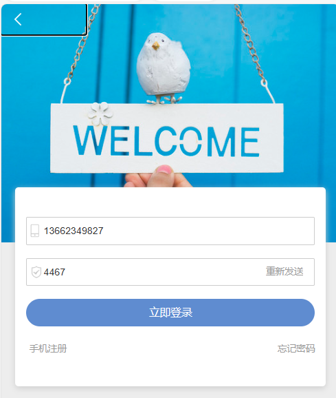获取验证码
用户在登录前需要获取验证码
后端代码：
@RestController @Slf4j @CrossOrigin // 解决跨域问题 public class PhoneCodeValidateController { // 注⼊Jedis连接池 @Autowired private JedisPool jedisPool; /** * ⽣成随机4位验证码（调⽤⼿机号api短信接⼝） */ public int phoneCode(){ int num = (int)(Math.random()*10000); return num; } /** * 根据⽤户的⼿机号⽣成redis中的key phone:code:⼿机号 * 判断key是否存在，如果key不存在对key进⾏赋值，设置过期时间为60m * 如果key存在，提示⽤户：验证码以发送请注意查收短信 * @param phoneNum * @return */ @GetMapping("getValidateCode") public String getValidateCode(@RequestParam("phoneNum") String phoneNum){ //获得jedis连接 Jedis jedis = jedisPool.getResource(); //保存⼿机验证码 Redis key String key = "phone:code:"+phoneNum; //判断key是否存在 if(!jedis.exists(key)){ int phoneCode = this.phoneCode(); log.info("验证码已发送，验证码："+phoneCode); jedis.set(key,phoneCode+""); jedis.expire(key,60); return "验证码发送成功！"; }else{ return "验证码已发送，还需等待："+jedis.ttl(key)+"秒"; } } }前端代码：
$.ajax({ type:"get", url:"http://localhost:8080/getValidateCode", data:{"phoneNum":phone}, success:function(msg){ alert(msg); } })
判断验证码是否正确
用户点击登录时，需要校验验证码是否正确
后端代码：
/** * ⽤户点击确定登录按钮，会将前台输⼊的⼿机号、验证码发送到后端 * 后端接受以后会和 Redis中的key进⾏⽐较 * 如果相等 验证码⽐较成功，登陆成功 * 如果失败 验证码输⼊错误 * @param code * @param phoneNum * @return */ @GetMapping("validateCode") public String validateCode(@RequestParam("code") String code, @RequestParam("phoneNum") String phoneNum){ //得到redis连接 Jedis jedis = jedisPool.getResource(); //通过phoneNum⽣成验证的key String key = "phone:code:"+phoneNum; //判断当前的key是否存在于redis中 if(code.equals(jedis.get(key))) { log.info("验证成功，执⾏登录逻辑"); return "登录成功！"; } return "验证码不正确！"; }前端代码
//确定按钮⽅法 function binding(){ var phone = $.trim($('#phone1').val()); $.ajax({ type:"get", url:"http://localhost:8080/validateCode", data:{ "code":$("#code1").val(), "phoneNum":phone }, success:function(msg){ alert(msg); } }) }
防止攻击
此处我们需要获取⽤户的ip地址，才能完成后续的业务，获取的时机在于⽤户发送获取验证码请求时，并且将ip地址⽣成Redis中的
key：protectCode:具体ip每次获取验证码时，判断如果key不存在（第⼀次获取验证码⽤户）进⾏ incr +1操作，并设置过期时间5分钟，如果存在（同⼀⽤户）对当前⽣成的key进⾏ incr +1操作
判断如果当前⽤户访问超过3次，⽣成Redis
key：lockip:具体ip，锁定此⽤户12⼩时⽆法获取验证码后端代码
@Autowired private JedisPool jedisPool; /** * ⽣成随机4位验证码（调⽤⼿机号api短信接⼝） */ public int phoneCode(){ int num = (int)(Math.random()*10000); return num; } //获取用户ip方法 private String getProtectIp(HttpServletRequest request){ return request.getRemoteAddr(); } /** * 根据⽤户的⼿机号⽣成redis中的key phone:code:⼿机号 * 判断key是否存在，如果key不存在对key进⾏赋值，设置过期时间为60m * 如果key存在，提示⽤户：验证码以发送请注意查收短信 * @param phoneNum * @return */ @GetMapping("getValidateCode") public String getValidateCode(@RequestParam("phoneNum") String phoneNum, HttpServletRequest request){ /** * 防⽌短信轰炸逻辑 * 1、根据⽤户IP⽣成Redis Key：protectCode:具体ip * 2、每次获取验证码，判断Key是否存在 * 如果不存在：执⾏incr +1操作，并设置过期时间5分钟 * 如果存在：直接执⾏incr +1 * 3、判断如果当前⽤户访问超过3次，⽣成Redis key：lookIp:具体ip， * 锁定此⽤户12⼩时⽆法获取验证码（设置过期时间为12⼩时） */ //获得jedis连接 Jedis jedis = jedisPool.getResource(); //优化代码：⽤户访问进来以后，直接判断redis中是否有对应的lockip，如果有，直接返回 //IP锁定12⼩时 String lockIp="lockIp"+this.getProtectIp(request); if(jedis.exists(lockIp)){ return "限制访问12⼩时后解锁"; } //保护Key String protectKey = "protectCode:"+this.getProtectIp(request); //判断保护key是否存在 if(!jedis.exists(protectKey)){ // 如果不存在 //incr命令可以直接创建key： key 的值会先被初始化为 0 ，然后再执⾏ INCR 操作 jedis.incr(protectKey); // 这里设置5分钟的过期时间是：5分钟内，不能超过3次 jedis.expire(protectKey,300); }else{ jedis.incr(protectKey); } if(Integer.parseInt(jedis.get(protectKey))>3){ jedis.set(lockIp,this.getProtectIp(request)); jedis.expire(protectKey,60*60*12); return "限制访问12⼩时后解锁"; } //保存⼿机验证码 Redis key String key = "phone:code:"+phoneNum; //判断key是否存在 if(!jedis.exists(key)){ int phoneCode = this.phoneCode(); log.info("验证码已发送，验证码："+phoneCode); jedis.set(key,phoneCode+""); jedis.expire(key,60); return "验证码发送成功！"; }else{ return "验证码已发送，还需等待："+jedis.ttl(key)+"秒"; } }
SpringBoot整合RedisTemplate
RedisTemplate的介绍
- RedisTemplate是SpringDataRedis中对JedisApi的⾼度封装，提供了redis各种操作、异常处理及序列化，⽀持发布订阅
- SpringData是Spring中数据操作的模块，包括对各种数据库的集成，⽐如我们之前学过的Spring Data JDBC、JPA等，其中有⼀个模块叫做SpringDataRedis，⽽RedisTemplate就是其中提供操作Redis的通⽤模板
- 官⽅⽹址：https://spring.io/projects/spring-data
通⽤API
在我们使⽤Jedis的时候，如果我们想要完成⼀些Redis的操作，对应的命令其实就是对应的⽅法，⽐如Set在Jedis中也就是set()⽅法，虽然很好上⼿，但是这会导致我们的代码⽐较臃肿，⽽既然SpringData出⼿整合了，它必然会按照⼀定的规律做进⼀步的封装，具体如下：
redisTemplate.ops...⽅法囊括了⼏乎所有的Redis不同数据类型的命令操作- 操作String类型数据：
redisTemplate.opsForValue() - 操作List数据类型：
redisTemplate.opsForList() - 操作Hash数据类型：
redisTemplate.opsForHash() - 操作Set数据类型：
redisTemplate.opsForSet() - 操作ZSet数据类型：
redisTemplate.opsForZSet() - 以上这些⽅法返回的都是
xxxOperations类型，⽐如- ValueOperations其中包括的就是String类型的所有操作：Set、Get等
整合
引入依赖
在创建项目的时候勾选下图选项，就可以引入相关依赖
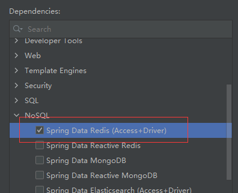<dependency> <groupId>org.springframework.boot</groupId> <artifactId>spring-boot-starter-data-redis</artifactId> </dependency>导入连接池，Jedis与RedisTemplate底层使⽤的连接池都是commons-pool2
<dependency> <groupId>org.apache.commons</groupId> <artifactId>commons-pool2</artifactId> </dependency>我们在整合Jedis的时候没有引入这个依赖是因为jedis已经加了
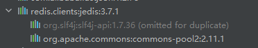
lettuce替代Jedis
在spring-boot-starter-data-redis的底层是没有引⼊Jedis的。
<dependency>
<groupId>org.springframework.data</groupId>
<artifactId>spring-data-redis</artifactId>
<version>2.6.9</version>
<scope>compile</scope>
</dependency>
<dependency>
<groupId>io.lettuce</groupId>
<artifactId>lettuce-core</artifactId>
<version>6.1.10.RELEASE</version>
<scope>compile</scope>
</dependency>
这是因为：在SpringBoot2.x版本以后，从原来的Jedis替换成了lettuce，所以2.x以后开始默认使⽤Lettuce作为Redis客户端，，Lettuce客户端基于Netty的NIO框架实现，只需要维持单⼀的连接即可⾼效⽀持业务端并发请求。同时，Lettuce⽀持的特性更加全⾯，其性能表现并不逊于，甚⾄优于Jedis。
- Jedis：采⽤的直连，多个线程操作的话，是不安全的，如果想要避免线程安全问题，就需要使⽤JedisPool连接池，但是也会有⼀些线程过多等其他问题，类似于BIO
- Lettuce：底层采⽤Netty，实例可以在多个线程中进⾏共享，不存在线程安全问题！类似NIO
如何配置
如何找到配置内容
如果我们不知道具体要配置什么内容，其实可以通过源码来进⾏查看，因为所有的SpringBoot配置类都有有⼀个⾃动装配类型，⾃动装配类型都会绑定⼀个properties配置⽂件。找到RedisAutoConfiguration ⾃动装配类型
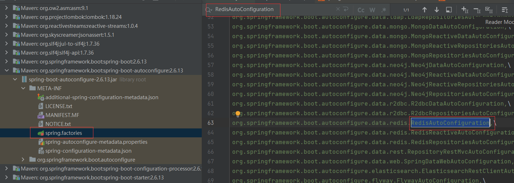然后找到绑定的RedisProperties
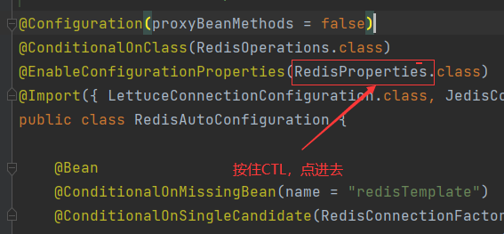进⼊其中我们就能看到这⾥我们需要配置什么了，包括它有哪些默认的配置
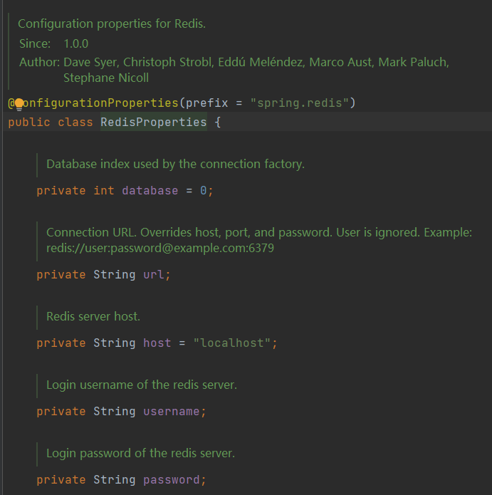当然这⾥其实我们可以再看⼀下RedisAutoConfiguration类型，在这其中我们就能看到此类型具体装配的内容
@Configuration(proxyBeanMethods = false)
@ConditionalOnClass(RedisOperations.class)
@EnableConfigurationProperties(RedisProperties.class)
@Import({ LettuceConnectionConfiguration.class, JedisConnectionConfiguration.class })
public class RedisAutoConfiguration {
@Bean
/**此类型可以⾃定义*/
@ConditionalOnMissingBean(name = "redisTemplate")
@ConditionalOnSingleCandidate(RedisConnectionFactory.class)
public RedisTemplate<Object, Object> redisTemplate(RedisConnectionFactory redisConnectionFactory) {
// ⼀旦底层使⽤Netty我们所有的对象都需要序列化，所以这⾥也同样需要
// 泛型为Object，所以我们后续使⽤会经常需要强转
RedisTemplate<Object, Object> template = new RedisTemplate<>();
template.setConnectionFactory(redisConnectionFactory);
return template;
}
//有这个String的原因在于Redis⼤部分都是String类型的操作
@Bean
@ConditionalOnMissingBean
@ConditionalOnSingleCandidate(RedisConnectionFactory.class)
public StringRedisTemplate stringRedisTemplate(RedisConnectionFactory redisConnectionFactory) {
return new StringRedisTemplate(redisConnectionFactory);
}
}
具体的配置
spring:
redis:
database: 0 # Redis数据库0-15
host: 192.168.124.188 # ip地址
password: 753159 # redis密码
port: 6379 # redis端⼝号
lettuce: # SpringBoot2.x后默认采⽤lettuce
pool:
max-active: 8 # 最⼤连接
max-idle: 8 # 最⼤空闲数
min-idle: 0 # 最⼩空闲数
使用：拿到RedisTemplate
@Autowired
private RedisTemplate redisTemplate;
@Test
void contextLoads2() {
redisTemplate.opsForValue().set("cs","测试");
System.out.println(redisTemplate.opsForValue().get("cs"));
//常⻅操作
// redisTemplate.multi();
// redisTemplate.exec();
// redisTemplate.discard();
}
结果是存入了redis，不过是乱码的
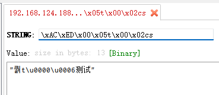但是并不影响程序运行，取出来，打印出来，是正常的
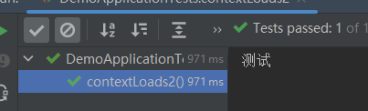为什么会是这样那？其实这就涉及到了序列化的问题了
RedisTemplate序列化问题
问题的原因
想要解决以上的问题，我们就需要掌握RedisTemplate序列化的问题，⾸先我们现在直接进⼊RedisTemplate源码
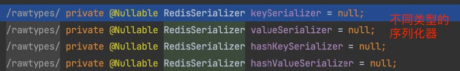再往下看有⼀个默认的序列化器
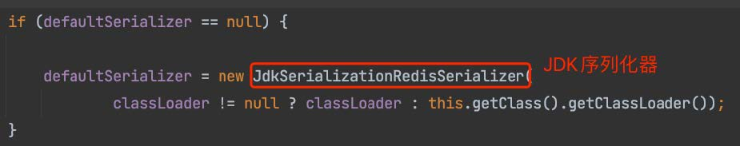也就是说，RedisTemplate默认采⽤的是默认的JDK序列化器，这种序列化⽅式会有⼀定的问题
- 可读性差
- 内存占⽤⼤
所以总结来说，我们就需要修改RedisSerializer的具体实现，这⾥我们可以先看⼀下RedisSerializer的实现类有哪些，其中以下图中的两个是我们最常⽤
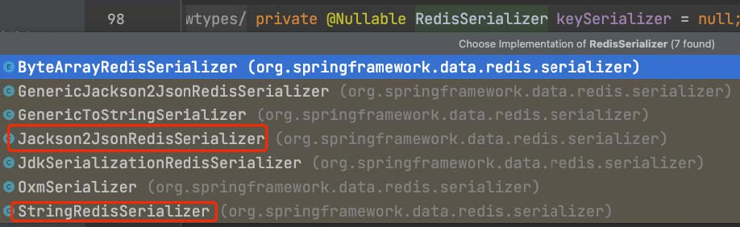因为⼀般情况下：
- key：String类型
- value：可能是对象，那么需要JSON的序列化⽅式
解决方式一：⾃定义RedisTemplate
我们新建⼀个RedisConfig类型，以下的这个是固定模板，可以直接使⽤
@Configuration
public class RedisConfig {
@Bean
public RedisTemplate<String, Object> redisTemplate(RedisConnectionFactory factory) {
// 为了研发⽅便 key直接为String类型
RedisTemplate<String, Object> template = new RedisTemplate<>();
// 设置连接⼯⼚
template.setConnectionFactory(factory);
//序列化配置，通过JSON解析任意对象
GenericJackson2JsonRedisSerializer jsonRedisSerializer = new GenericJackson2JsonRedisSerializer();
//设置key序列化
template.setKeySerializer(RedisSerializer.string());
template.setHashKeySerializer(RedisSerializer.string());
//设置value序列化
template.setValueSerializer(jsonRedisSerializer);
template.setHashKeySerializer(jsonRedisSerializer);
template.afterPropertiesSet();
return template;
}
}
测试代码：
import org.springframework.data.redis.core.RedisTemplate;
@Autowired
private RedisTemplate redisTemplate;
@Test
void contextLoads2() {
redisTemplate.opsForValue().set("cs","测试");
System.out.println(redisTemplate.opsForValue().get("cs"));
//常⻅操作
// redisTemplate.multi();
// redisTemplate.exec();
// redisTemplate.discard();
}
不再乱码：
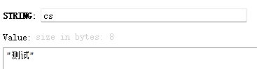为什么会自动装配的自定义的RedisTemplate
@Autowired
private RedisTemplate redisTemplate;
上面的代码有一个问题，Spring是如何实现redisTemplate自动装配到RedisTemplate<String, Object>而不是RedisTemplate<Object, Object>的？
以下是Spring Boot的默认自动配置类RedisAutoConfiguration
@Configuration(proxyBeanMethods = false)
@ConditionalOnClass(RedisOperations.class)
@EnableConfigurationProperties(RedisProperties.class)
@Import({ LettuceConnectionConfiguration.class, JedisConnectionConfiguration.class })
public class RedisAutoConfiguration {
@Bean
/**此类型可以⾃定义*/
@ConditionalOnMissingBean(name = "redisTemplate")
@ConditionalOnSingleCandidate(RedisConnectionFactory.class)
public RedisTemplate<Object, Object> redisTemplate(RedisConnectionFactory redisConnectionFactory) {
// ⼀旦底层使⽤Netty我们所有的对象都需要序列化，所以这⾥也同样需要
// 泛型为Object，所以我们后续使⽤会经常需要强转
RedisTemplate<Object, Object> template = new RedisTemplate<>();
template.setConnectionFactory(redisConnectionFactory);
return template;
}
}
@Autowired的自动装配的默认情况
- 默认情况下，@Autowired会按照类型（Type）在Spring容器中进行查找，即寻找与依赖项类型相匹配的Bean。如果容器中只有一个该类型的Bean，那么就直接将这个Bean注入到依赖项中。
- 如果容器中存在多个相同类型的Bean，并且没有通过其他方式（如@Qualifier注解）来指定具体的Bean名称，那么Spring会抛出
NoUniqueBeanDefinitionException异常，提示有多个Bean候选者而无法确定注入哪一个。
@ConditionalOnMissingBean(name = “redisTemplate”)
在RedisAutoConfiguration中，@ConditionalOnMissingBean(name = "redisTemplate")是一个关键的条件注解。这意味着如果容器中已经存在一个名为redisTemplate的Bean（不考虑泛型参数），则不会创建RedisAutoConfiguration中定义的RedisTemplate Bean。
因此RedisConfig中定义的RedisTemplate<String, Object>会被自动装配到你的组件中。这是因为Spring在容器中找到了一个名为redisTemplate的Bean，满足了RedisAutoConfiguration中的条件注解的否定条件，从而阻止了RedisAutoConfiguration中相同名称Bean的创建。
存储对象会造成数据冗余
@Data
@NoArgsConstructor
@AllArgsConstructor
public class User {
private String name;
private int age;
}
@Test
void saveUser(){
redisTemplate.opsForValue().set("user:1",new User("Mask",20));
System.out.println(redisTemplate.opsForValue().get("user:1"));
}
控制台输出：User(name=Mask, age=20)
但是在redis里面的数据是这样的：
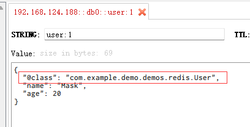JSON序列化的⽅式确实能够帮助我们⾃动的实现序列化和反序列化，主要是因为添加了@class，但是这个会导致额外的内存开销，如果在数据量特别⼤的时候就会有影响，但是如果没有@class就不会实现⾃动序列化和反序列化
解决方式二：StringRedisTemplate
其实实际开发中，如果为了节省空间，并不会完全使⽤JSON序列化来处理value，⽽是统⼀采⽤String序列化器，储存Java对象也是如此，这就意味着我们需要重新编写RedisTemplate，但是SpringBoot其实提供了⼀个StringRedisTemplate，通过它我们就可以完成以上的需求
import com.fasterxml.jackson.databind.ObjectMapper;
import org.springframework.data.redis.core.StringRedisTemplate;
@Autowired
private StringRedisTemplate stringRedisTemplate;
//Json⼯具
private ObjectMapper mapper = new ObjectMapper();
@Test
void StringTemplate() throws JsonProcessingException {
User user = new User("Jerry",18);
//⼿动序列化: 把对象变成一个String
String json = mapper.writeValueAsString(user);
//写⼊数据: 这个是Value就是String
stringRedisTemplate.opsForValue().set("user:2",json);
//读取数据：获取的也是一个String
String val = stringRedisTemplate.opsForValue().get("user:2");
//反序列化: 把String变成一个对象
User u = mapper.readValue(val,User.class);
System.out.println(u);
}
控制台输出：User(name=Jerry, age=18)
redis呈现：
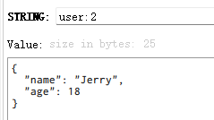解决方式三：企业中用得比较多的⾃定义RedisTemplate（有问题）
修改配置类
@Configuration
public class RedisConfig {
@Bean
public RedisTemplate<String,Object>
redisTemplate(RedisConnectionFactory factory){
// 为了研发⽅便 key直接为String类型
RedisTemplate<String,Object> template = new RedisTemplate<>();
// 设置连接⼯⼚
template.setConnectionFactory(factory);
//使⽤Jackson2JsonRedisSerializer来序列化和反序列化redis的value值
Jackson2JsonRedisSerializer jsonRedisSerializer =
new Jackson2JsonRedisSerializer(Object.class);
//Json⼯具
ObjectMapper mapper = new ObjectMapper();
mapper.setVisibility(PropertyAccessor.ALL, JsonAutoDetect.Visibility.ANY);
mapper.activateDefaultTyping(LaissezFaireSubTypeValidator.instance,
ObjectMapper.DefaultTyping.NON_FINAL,
JsonTypeInfo.As.PROPERTY);
//设置key序列化
template.setKeySerializer(RedisSerializer.string());
template.setHashKeySerializer(RedisSerializer.string());
//设置value序列化
template.setValueSerializer(jsonRedisSerializer);
template.setHashKeySerializer(jsonRedisSerializer);
template.afterPropertiesSet();
return template;
}
}
测试代码还是方式一的代码
@Autowired
private RedisTemplate redisTemplate;
@Test
void saveUser(){
redisTemplate.opsForValue().set("user:3",new User("Mask3",20));
System.out.println(redisTemplate.opsForValue().get("user:3"));
System.out.println(redisTemplate.opsForValue().get("user:3").getClass().toString());
}
redis里面确实没有@class的内容了：
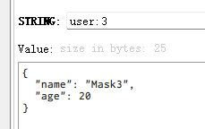但是，无法自动转成User对象，回来的是一个LinkedHashMap
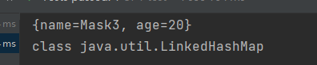转载请注明来源，欢迎对文章中的引用来源进行考证，欢迎指出任何有错误或不够清晰的表达。可以在下面评论区评论，也可以邮件至 1909773034@qq.com